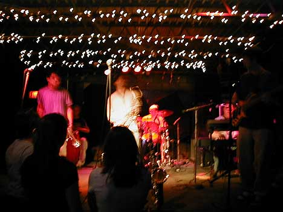
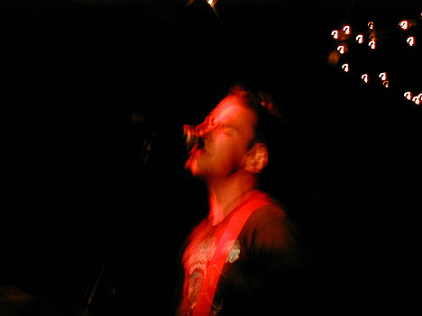
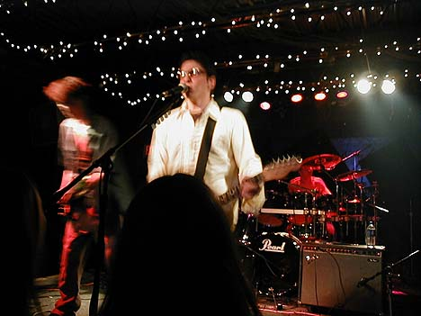
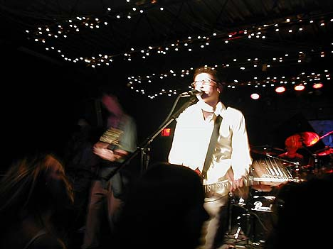
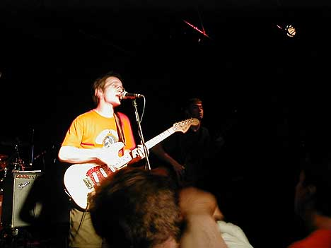
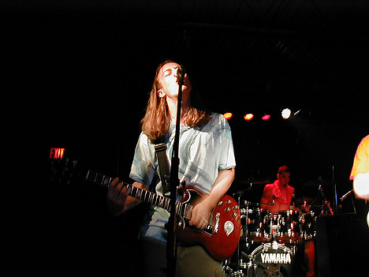
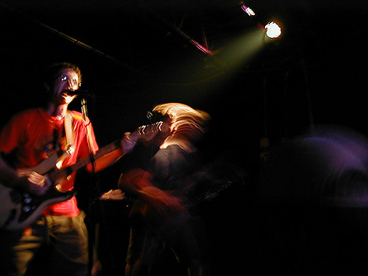

Big Orange Crayonmusical thingsMojive, F-Timmi, Visual Reason, and the Orange at Valentine's 6/30/00 pictures at the bottom! Ok, now this was just freaking awesome. The first band on was Mojive. Since it was my first time seeing them, I didn't know what to expect and they completely blew me away. They are a six-piece band: a drummer, a percussionist, a keyboard player, a bass player, a trumpet player and a saxophone player. I would sort of compare them to Soul Coughing, but with Jazz elements instead of the electronics and funky as heck. Despite looking very young, they were very tight. Although he hid behind the bass player, the keyboard guy had a very expressive style of playing (and he rapped for a bit on the last song!). The bass player kind of reminded me of Victor Wooten at times. I like. F-Timmi was on next. Apparently, they're going out to California soon, and I hope they kick left-coast ass out there. They play speedy punk rock that's just poppy enough to make the songs interesting but not cloyingly so. Matt said that the bass player was a bit too theatrical with his jumping about and pouring water on himself, but I enjoyed it. People in the crowd were jumping around and moshing for a bit and it was all fun. Visual Reason was the third band to play, and although I hadn't seen them around before, they already had a fairly large following of teenage girls who know all the words. I would call them emo-tinged power pop if genre classifications are helpful. Despite having lots of sound problems, they put on a great show, so yay them! Plus, they threw candy into the crowd - I didn't want any so I threw what remained of the pile that landed on me after the kids around me took what they wanted into the back. Fun fun. The Orange were the headliners, and as usual they kicked ass. This is the sixth review of an Orange show that I'm writing, so I've sort of run out of ways to describe their style, so I'll just say what was new, ok? ok. They started with a new song that was very quiet and beautiful, and it sort of reminded me of the Promise Ring. Now more than ever I can't wait for them to put out an album. The rest of the show was very energetic and everyone that I could see was really into it. As they should be. They're going to be doing a larger tour soon with members of the Dead Milkmen, so if they come near you, promise me you'll check them out. So yeah, a tremendous show, with tons of nice people in the crowd! Rah. Pictures: As usual, I didn't use my flash, so the long exposures make for some strange images, but I like it that way. The lights were blinky for Visual Reason and the Orange, which made it kind of tough, but I like challenges. =) All of my Mojive pictures came out bad, but here's one of them:  Same with F-Timmi:  Visual Reason came out a little better:   The Orange brought the ruckus:    |